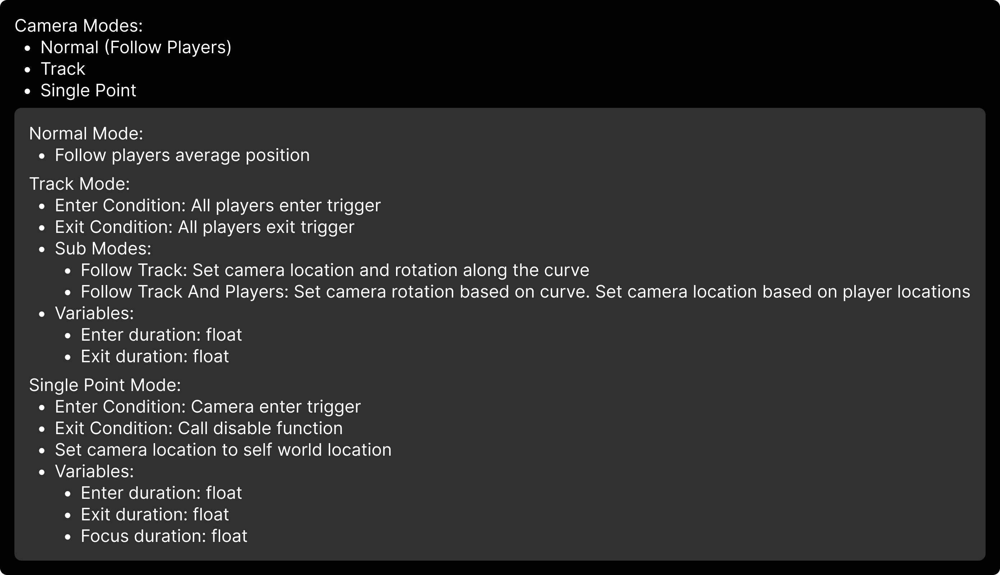

Wire and Whiskers
Wire and Whiskers is a local multiplayer game inspired by It Takes Two and Little Nightmares.
The game is designed for 2 players: one controls a mouse, and the other controls a robot. The objective is to defeat monsters and solve puzzles.
As a Technical Designer, I was responsible for implementing the 3Cs (Camera, Character, Controls) and other features such as the gui.
My Contributions
- Participated in the design of the 3Cs (movement, camera, combat control) for both player states (fused and separated)
- Implemented the characters in blueprints
- Developed dynamic camera systems (top-down & 2.5D) with adaptive framing
- Implemented editor tools for level design
Controls
The controls are designed to be intuitive and easy to use. The mouse uses the left stick to move and to aim. The robot uses the left stick to move and the right stick to aim.
They can dash to avoid taking damage from enemies and the environment
But that not all, each characters has their own unique way to play.
Characters
The Mouse

The mouse is a brawler style combat.
He can unleash powerful close-range attacks.
Synergy:
The mouse can pull the robot. The robot deal damage during this state.
Air Attack
When launched, the mouse can perform a special attack that damages all enemies beneath him.
If it hits successfully, the mouse is launched back into the air and can perform the special attack again.
The Robot

The mouse is a ranger combat style.
It can unleash powerful long-range attacks.
Synergy:
The robot can launch the mouse when they are close to each other. This action can be used to solve puzzles or in combat ().
Camera
Primary Components
- Trigger box to apply data to the camera
- Rail to force the camera following a specific path using a spline
- Single point trigger to snap the camera on a point, used in combat phases
Behaviors
The camera follows the 2 players, and they cannot leave the screen.
The camera has 3 main modes:
Camera Angles
The angle of the camera dynamically change during the game
Side Scrolling
This camera is used during exploration/puzzle phases.
Top Down
This camera is used during combat phases.
Camera Rail
An actor that forces the camera to follow a rail — perfect for cinematic transitions.
Camera Focus Point
An actor that forces the camera to move to a specific point.